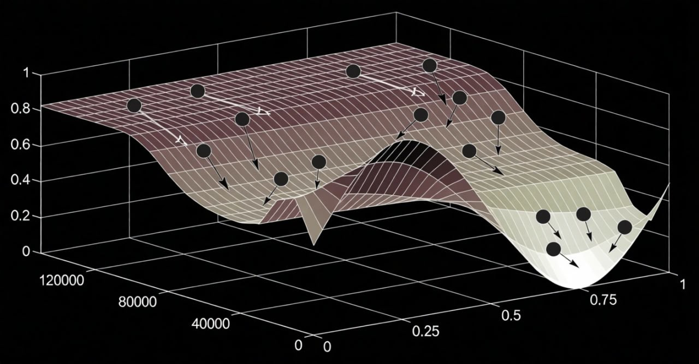

auto_graph
QTradeX Core
Build, Backtest & Optimize AI-Powered Trading Bots
Lightning-fast Python framework for algorithmic trading. Deploy on 100+ exchanges with vectorized execution and genetic optimization.
help_outline
Why QTradeX?
Modular, Non-Locked Architecture
- Modular architecture - want to use QTradeX's data fetching with a custom backtest engine? Go for it!
- Tulip + CCXT Integration
- Free and Open Source (FOSS)
- Runs on desktop
- Custom Bot Classes
- Fast, Disk-Cached Market Data
- Ultra Fast Backtests (even on a Raspberry Pi!)
stars
Features at a Glance
earthquake
Vibe Code a Bot:
terminal
Code Example
description ema_cross_bot.py
import qtradex as qx import numpy as np class EMACrossBot(qx.BaseBot): def __init__(self): # Notes: # - If you make the tune values integers, the optimizers # will quantize them to the nearest integer. # - By putting `_period` at the end of a tune value, # QTradeX core will assume they are periods in days and will scale them # to different candle sizes if the data given isn't daily self.tune = { "fast_ema_period": 10.0, "slow_ema_period": 50.0 } self.clamps = [ # min, max [5, 50 ], # fast_ema [20, 100], # slow_ema ] def indicators(self, data): return { "fast_ema": qx.ti.ema(data["close"], self.tune["fast_ema"]), "slow_ema": qx.ti.ema(data["close"], self.tune["slow_ema"]), } def strategy(self, tick_info, indicators): fast = indicators["fast_ema"] slow = indicators["slow_ema"] if fast > slow: return qx.Buy() elif fast < slow: return qx.Sell() return qx.Thresholds(buying=fast * 0.8, selling=fast * 1.2) def plot(self, *args): qx.plot( self.info, *args, ( # key name label color axis idx axis name ("fast_ema", "EMA 1", "white", 0, "EMA Cross"), ("slow_ema", "EMA 2", "cyan", 0, "EMA Cross"), ) )
Quick Start
$pip install qtradex
# Or, if you want the latest updates:
$git clone https://github.com/squidKid-deluxe/QTradeX-Algo-Trading-SDK.git QTradeX
$cd QTradeX
$pip install -e .
Optimization

Leverage advanced algorithms like QPSO, LSGA, or others to fine-tune parameters for maximum performance.
map
Roadmap
- More indicators (non-Tulip sources)
- GPU Acceleration for indicators
- Improved multi-core support for optimization
- Windows/Mac support
- TradFi Connectors: Stocks, Forex, and Comex support
account_tree
Usage Guide
1
Build Bot
arrow_forward
2
Backtest
arrow_forward
3
Optimize
arrow_forward
4
Deploy